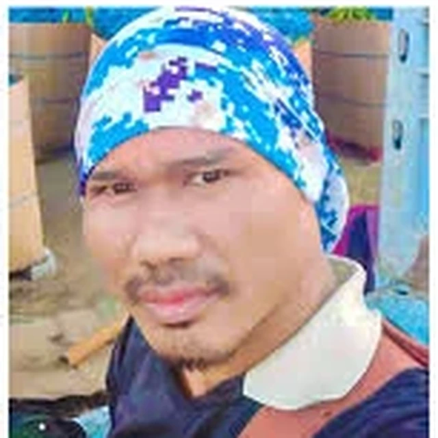

סיפור חיים
סומקואן פנסה-ארד ז״ל, בן 39, היה אזרח תאילנד שעבד בחקלאות בקיבוץ נחל עוז. חבריו לעבודה ומכריו בקיבוץ תיארו אותו כעובד חרוץ, מסור ונאמן, שהיה חלק בלתי נפרד מהעשייה החקלאית בקיבוץ. זכרו הוא חלק מסיפורם של העובדים הזרים שנפגעו באותו יום קשה.

נחל עוז
אזרח תאילנד שעבד בחקלאות בנחל עוז
סומקואן פנסה-ארד ז״ל, בן 39, היה אזרח תאילנד שעבד בחקלאות בקיבוץ נחל עוז. חבריו לעבודה ומכריו בקיבוץ תיארו אותו כעובד חרוץ, מסור ונאמן, שהיה חלק בלתי נפרד מהעשייה החקלאית בקיבוץ. זכרו הוא חלק מסיפורם של העובדים הזרים שנפגעו באותו יום קשה.